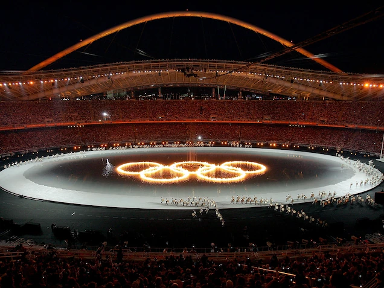

Take a look at this short, thrilling and exciting video recaping some events in the Olympics.
The Olympics are an international summer and winter sporting event that happens every 4 years. The Olympic Games are considered the world’s foremost sports competition with more than 200 nations participating. The inspiration for the Olympic games was the ancient games held in Olympia‚ Greece, between the 8th century BC until the 4th century AD. The International Olympic Committee (I.O.C.) chooses the host city for every Olympic games‚ organizes and funds the games. They also determine the schedule and chooses which sports that will be competing. The first three finishers receive medals: gold, silver and bronze. The Olympics has become increasingly popular with almost every country around the world now participating in the games. However‚ with its growth in popularity, the Olympics has become the subject of various scandals such as boycotts‚ bribery‚ and doping.
The origins of the Olympics are traditional and very mysterious. One of the most common myths is about Heracles and the god‚ Zeus. Legends say that‚ Heracles built the Olympic Stadium as a tribute to Zeus. The Ancient Olympic Games were cultural and athletic celebrations that were held every four years in Olympia‚ Greece‚ a place that was considered the Greek God Zeus’ sanctuary. The Ancient Olympics began with a ceremonial offering that honors Zeus and Pelops‚ a heavenly hero and the mythological monarch of Olympia. The (generally) agreed upon first Ancient Olympic Games were held around 776 BC due to inscriptions discovered in Olympia that mention winners of a four-year-old footrace. The athletes who competed in the games came from various ancient city-states and kingdoms.The first Olympic champion is said to have been a cook from Elis‚ Coroebus. The event winners were idolized and immortalized in poetry and statues‚ and were given olive wreaths. The Ancient Olympic Games reached the height of its popularity sometime in the 6th and/or 5th centuries BC. However‚ as the Roman Empire gained power and influence in Greece‚ unfortunately the Olympic Games slowly stopped, around 393 AD to 426 AD.

The Modern Olympics has changed from the Ancient Olympics because more games were added. In the modern olympics‚ the winter games‚ paralympics‚ and youth games were added. Also, in the Ancient Olympics, athletes were mainly men, and they didn’t wear anything when playing. Nowadays, there are men and women competing, and they all wear something comfortable and safe to wear. Athletes and officials stay in the Olympic Village. The Olympic Village is a self-contained home for all the Olympic participants. It includes cafeterias‚ health clinics‚ and locations for religious activities. The location of the Olympic Village changes everytime in the new host country. In the Ancient Olympics, the athletes would just stay at their homes. Also, another difference is the amount of teams competing. Now, instead of just Greece, there are 200 other nations participating. There are some similarities between the Ancient and Modern Olympics. The traditional ceremonies still occur, and some of the same sports are still there like relay.
Symbols are used by the Olympic Movement to reflect the sayings that are a part of the Olympics Charter. The Olympic charter states the principles of the Olympics, the law that should be abided by the IOC, and rights and duties of the 4 organizations under the Olympics. The Olympic rings or emblem are five interconnected rings that symbolize the connection and unity of the Americas, Africa, Asia, Europe, Oceana. This emblem appears on the Olympic flag where the rings are coloured blue‚ yellow‚ black‚ green‚ and red; chosen because every flag around the world uses at least one of the colors. The flag was approved in 1914‚ but was only first flown at the 1920 Summer Olympics in Antwerp, Belgium. Ever since‚ the flag has been raised at each Olympic Games ceremony, becoming the Olympic’s most associated symbol. In 1894‚ Pierre de Coubertin proposed to make the Olympic motto Citius‚ Altius‚ Fortius (trans. Faster‚ Higher‚ Stronger). His proposal was passed in 1924. The Olympic Flame is another major symbol of the Olympics. This ceremony reflects and mirrors the ancient Greek traditions. Now‚ in the modern Olympics‚ the flame is ignited at the Temple of Hera‚ in Olympia. During this ceremony, a priestess and ten female performers dressed as Vestal Virgins‚ ignite a torch by placing it inside a curved mirror that focuses on the sun’s light. Then she lights the torch of the first relay bearer (a Greek athlete), starting the Olympic torch relay. The athletes will carry the torch to the Olympic Stadium in the host city. In 1968‚ the Olympic mascot was introduced to represent the cultural history of the host country. For example, in the 1980 Summer Olympics‚ the Soviet bear cub Misha was the Olympic Mascot.
The opening ceremony happens on the Friday before the sporting events begin. At the beginning of the ceremony, the president of the International Olympic Committee and a representative of the host country will enter first. After they enter, the host country’s flag will be raised with a performance of the country’s national anthem. The host nation then has performances of the arts that reflect the culture of the country. Each host tries to present a ceremony that leaves a greater impression compared to their predecessor. For example‚according to reports‚ the opening ceremony for the Beijing Olympics cost $100 million‚ with the artistic part of the event being the majority of the expense. The athletes enter the stadium‚ one by one, following the artistic element of the event. To honor the Olympics’ beginnings‚ Greece is traditionally the first nation to enter, and the host country is last. Nations then enter the stadium in alphabetical order (according to the host country’s preferred language). The President’s of the Organizing Committee‚ and the International Olympic Committee‚ along with the Head of State/Representative of the Host Country all give speeches. Finally‚ the Olympic torch is carried into the stadium and passed on until it reaches the last torch bearer‚ usually a successful Olympic athlete from the host country. That athlete ignites the Olympic flame in the stadium’s cauldron, which signals the start of the Olympic Games.

The Olympic Games’ closing ceremony takes place on the Sunday following the conclusion of all sporting events. Each participating country’s flag bearers enter the stadium first‚ followed by the athletes‚ who all enter together‚ regardless of nationality. The last medal presentation of the Games is held as part of the closing ceremony. The flags of the current host country‚ following host country and Greece are raised and the three national anthems are played. After the President of the Organizing Committee and the President of the IOC give their closing speeches, the Olympics are formally finished when the flame is extinguished. After this, the Antwerp Ceremony commences: the current host city’s mayor transfers a special Olympic flag to the President of the IOC. They then pass it on to the mayor of the city hosting the next Olympic Games.

The Olympics Games include 408 events, 35 sports, and 30 categories. The Summer Olympics has 26 sports‚ while the Winter Olympics have 15 sports. The main sports played in the summer games are athletics‚ swimming‚ fencing‚ and artistic gymnastics. Current Olympic sports such as badminton‚ basketball‚ and volleyball began as demonstration sports on the show before being raised to full Olympic sports. Some sports that had been included in previous Games were eventually removed from the schedule. For example, both golf and rugby had been removed from the schedule of the Olympics. International sports federations (IFs) are the global regulators of Olympic sports. At the IOC, 35 federations are represented. The International Olympic Committee recognizes sports that are not part of the Olympic schedule. These sports are not officially recognized as Olympic sports‚ although there have been instances where they will be upgraded to Olympic sport status during the first IOC session. The commission came up with 7 criteria to determine whether a sport should be considered to be in the Olympic Games:
These criteria are:

Countries boycott to show disapproval, concern, and sometimes even revenge. In 1956, Netherlands, Spain, and Switzerland boycotted the Melbourne Olympics. This was because the Soviet Union oppressed the Hungarian rebellion. Meanwhile, Cambodia‚ Egypt‚ Iraq‚ and Lebanon also boycotted the Games when the Israeli army forced their way into Egypt. Guyana, Iraq, twenty African countries didn’t participate in the Montreal Games. In the 1976 Olympics, which took place in Canada, the Republic of China was not allowed to participate. This decision was made by Canada’s prime minister at the time, Pierre Elliott Trudeau. It was made because of political pressure to make sure that the Chinese delegation would not participate under Canada’s name. The Cold War caused boycotts in 1980 and 1984.The United States and sixty-five other countries boycotted the Moscow Olympics in 1980. The Soviet Union and 15 other countries responded by boycotting the 1984 Summer Olympics in Los Angeles.

The Olympic Standard is the IOC’s drug-testing protocol. The Olympic Standard has a global standard that each country’s team has to match. In the Beijing Olympics, the IOC tested 3‚667 competitors. Banned drugs were detected using both urine and blood tests. In the London Olympics, over 6‚000 Olympic and Paralympic competitors were assessed in London. 107 athletes tested positive for illegal substances before the game and were not allowed to compete.
For more information about Doping Scandals at the Olympics, visit this link .
Terrorism had the most direct impact on the 1972 Olympic Games. In what is now known as the Munich massacre‚ eleven members of the Israeli Olympic team were kidnapped during the Summer Games in Munich‚ Germany. Two of the athletes were killed shortly after they were kidnapped‚ while the other nine were killed after a failed rescue effort. Also, a German police officer, and five terrorists were killed as well. Another terrorist organization launched attacks in the region after Barcelona‚ Spain‚ was chosen to host the 1992 Summer Olympics‚ including the ten-person explosion in the Catalan city of Vic in 1991. Two Olympic Games in the United States were impacted by terrorism. A bomb exploded at the Centennial Olympic Park in Atlanta during the 1996 Summer Olympics‚ killing two people and injuring 111 others. The 2002 Winter Olympics in Salt Lake City were held just five months after the September 11 terrorist attacks‚ necessitating a stronger level of security than had ever been provided for an Olympic Games before. The flag that flew over Ground Zero and honor guards of NYPD and FDNY members were among the emblems included in the Games’ opening ceremony.
The websites used to do this project are:

Fireworks outside of the Tokyo Olympics Arena: Tokyo Olympics Fireworks, https://news.sky.com/video/tokyo-olympics-fireworks-mark-the-start-of-the-2020-olympic-games-12362070 Retrieved 2022-02-20.
Fireworks outside of the Tokyo Olympics Arena: Tokyo Olympics Fireworks, https://ksltv.com/469215/with-muted-ceremony-and-empty-stadium-tokyo-olympics-begin/ Retrieved 2022-02-20.
Ancient Olympics Relay Run: Ancient Olympics, https://www.pinterest.ca/pin/398850110723440633/ Retrieved 2022-02-20.
Ancient to Modern Olympics progression: Ancient to Modern Olympics, https://scienceblog.com/523513/5-ways-the-ancient-olympics-differ-from-the-modern-games/ Retrieved 2022-02-20.
Modern Olympic Games in London: Modern Olympic Games, https://theguidon.com/1112/main/2012/09/the-modern-olympic-games/ Retrieved 2022-02-20.
Olympics in Greece: Greek Olympics modern, https://edition.cnn.com/2013/06/10/business/greek-ambassador-olympic-lessons-crisis Retrieved 2022-02-20.
Tokyo 2020 Summer Olympics: Lighting of the flame, https://www.gmanetwork.com/news/sports/content/729441/flame-for-2020-tokyo-olympics-lit-in-greece-amid-virus-lockdown/story/?top_picks&order=4 Retrieved 2022-02-20.
Olympic Rings: Symbol of the Olympic Rings with a torch, http://getdrawings.com/get-clipart#olympic-rings-clipart-26.png Retrieved 2022-02-21.
Olympic Motto: 3 words that the Olympics follow, https://ujkor.hu/content/az-ot-karikatol-a-szines-tacskoig-olimpiai-jelkepek-nyomaban Retrieved 2022-02-21.
Vancouver 2010: Vancouver Olympic Winter games, https://www.pinterest.ca/pin/556616835179210924/ Retrieved 2022-02-21.
London 2012 games: Opening Ceremony of the London 2012 Olympic Games, https://www.aarp.org/entertainment/television/info-2021/best-olympic-opening-ceremonies.html Retrieved 2022-02-21.
Opening Ceremony: Nature Inspired Opening Ceremony, https://olympics.com/ioc/integrity/prevention-competition-manipulation/ Retrieved 2022-02-21.
Beijing 2008 Olympics: Beijing 2008 Olympics, https://www.myweeklypreview.com.au/news/queensland-bid-for-the-olympics/ Retrieved 2022-02-21.
Vancouver Olympic Games: Winter Olympic Games in Vancouver, https://www.bamhop.com/2019/12/december-2019-2010s-review-of-decade.html Retrieved 2022-02-21.
Winter Olympics :Sochi Winter Olympics, https://thdwallpapers.blogspot.com/2014/02/winter-olympic-charter-games-logo-images.html Retrieved 2022-02-21.
Sports in the Olympics, Images of all the sports in the olympics https://www.bing.com/images/blob?bcid=SJp-aM7Eed8DeQ Retrieved 2022-02-21.
Images of Sports: Images of some sports played in the Olympics, https://www.nytimes.com/2021/05/10/learning/lesson-of-the-day-the-tokyo-olympics-explained.html Retrieved 2022-02-21.
1980 Boycott: Image of a man holding a sign in the 1980 Boycott, https://www.deccanherald.com/sports/other-sports/that-almost-apology-for-the-1980-olympic-boycott-helps-a-little-866543.html Retrieved 2022-02-21.
Beijing Boycott: #Boycott Beijing 2022 protest, https://www.bing.com/images/blob?bcid=SIQqOaHf398DUw Retrieved 2022-02-21.
Use of performance-enhancing drugs: A hand holding a medal and drugs, https://sites.psu.edu/performanceenhancingdrugs/ Retrieved 2022-02-21.
Performance-enhancing drugs: Performance-Enhancing Drugs in the Olympics, https://www.bing.com/images/blob?bcid=SEwoV9qXQd8DHg Retrieved 2022-02-22.
Performance-Enhancing Doping: A picture depicting medals, and drugs, https://thumb9.shutterstock.com/image-photo/stock-photo-doping-in-sport-concept-450w-302678936.jpg Retrieved 2022-02-22.
Rio Olympics Security: Guards stationed infront of the arena where the Rio Olympics took place, https://www.news.com.au/sport/breaking-news/security-failures-at-rio-olympics-placing-athletes-and-visitors-in-real-danger-say-frustrated-aoc/news-story/77eb87defb5c2baf38a34367b67e3b58?ck_st=false Retrieved 2022-02-22.
Military stationed at the 2016 Rio Olympics: Military stationed at the 2016 Rio Olympics after threats, https://theobjective.com/general/2016-07-19/el-mensaje-amenazante-del-grupo-brasileno-leal-al-isis-a-menos-de-un-mes-de-los-jjoo/ Retrieved 2022-02-22.
UK olympics Security: Image of UK security at the Olympics, https://edition.cnn.com/2012/07/17/sport/olympic-security-overview/index.html Retrieved 2022-02-22.
Olympic Track: Group of runners on the Olympic track, https://www.24newshd.tv/15-Aug-2021/failure-in-olympics-govt-decides-forensic-audit-of-poa-funds Retrieved 2022-02-23.
Olympic Trailer: Video recapping the Olympic Games, https://www.youtube.com/watch?v=JvEgTmWsij0 Retrieved 2022-02-23.
Return to the top of the page.
{kind=link}
{kind=link}